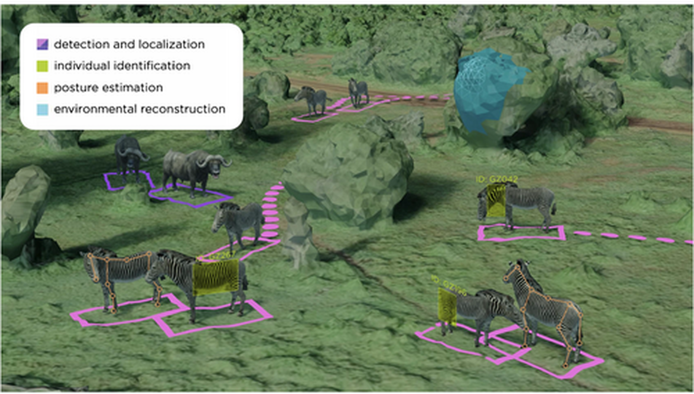

Imageomics researcher, Jenna Kline, has been awarded for a major international ecology award for her work on new methods to study animal behavior using advanced technology.
The Robert May Prize is a prestigious international recognition reserved for early-career researchers who deliver the year's most impactful methodological advances in quantitative ecology.
Jenna's award-winning paper, “Studying collective animal behaviour with drones and computer vision,” exemplifies the core mission of our institute: using advanced technology to unlock biological insights at an unprecedented scale.
By integrating edge-AI with autonomous drones, Jenna and her colleagues have established a timely benchmark for analyzing animal group dynamics in real time. The paper provides three essential pillars for the future of the discipline:
- A Cross-Disciplinary Framework: Unifying vocabularies across animal ecology, computer vision, and robotics.
- Global Standards: Providing a roadmap for deploying complex hardware and software systems amid the constraints of field research.
- Responsible Innovation: Addressing the vital legal and ethical challenges inherent in deploying emerging technologies in the wild.
Please join us in congratulating Jenna and the entire co-author team—Saadia Afridi, Edouard G. A. Rolland, Guy Maalouf, Lucie Laporte-Devylder, Christopher Stewart, Margaret Crofoot, Charles V. Stewart, Daniel I. Rubenstein, and Tanya Berger-Wolf—on this achievement.
Read the award-winning research paper: Studying collective animal behaviour with drones and computer vision
Read the Methods blog feature: Winner! Jenna Kline: Studying collective animal behaviour with drones and computer vision